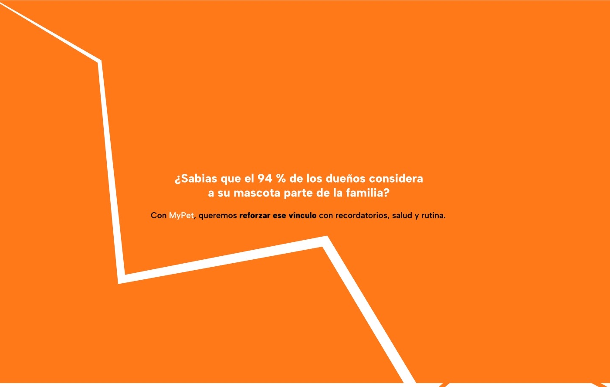
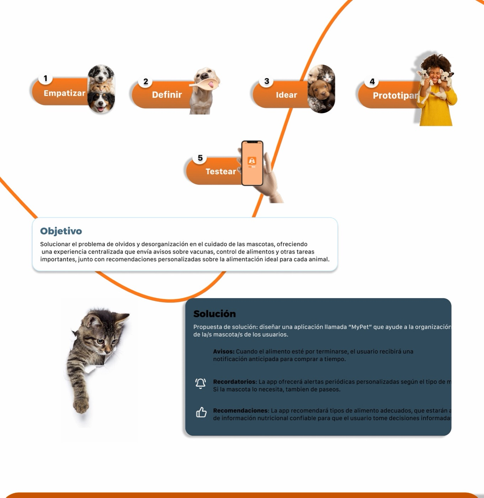
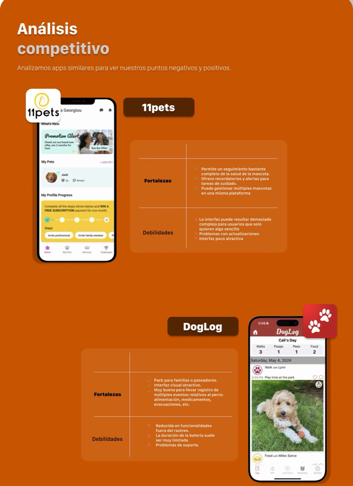
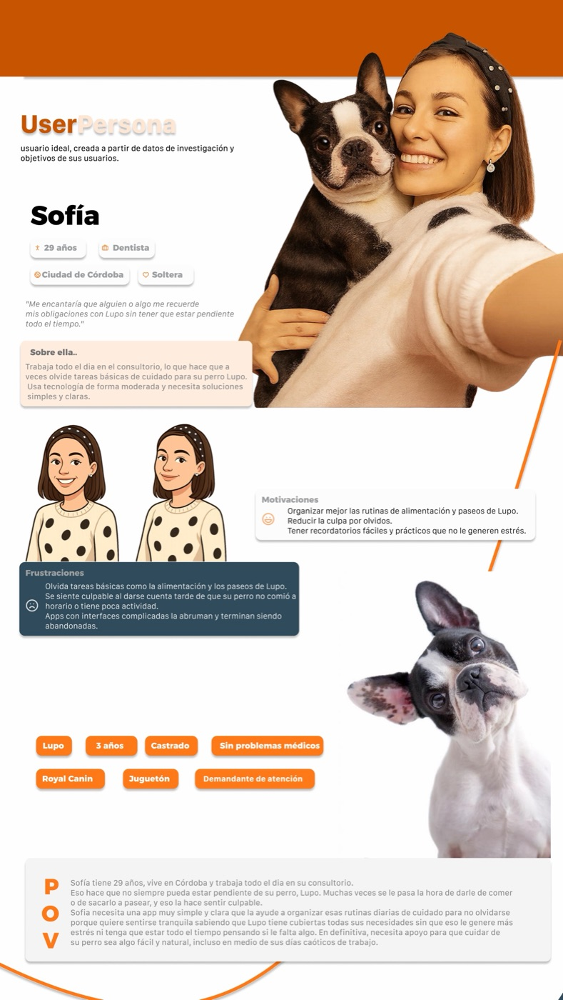
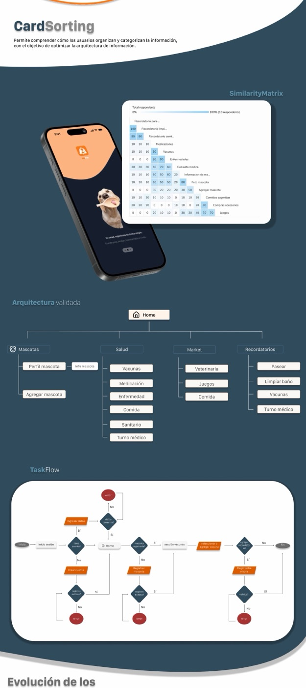
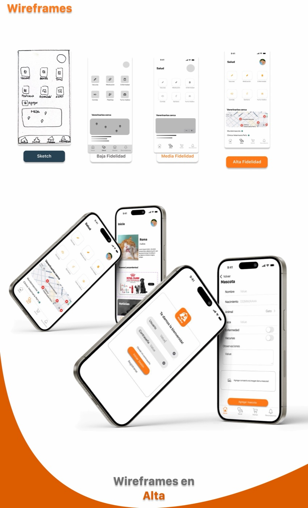
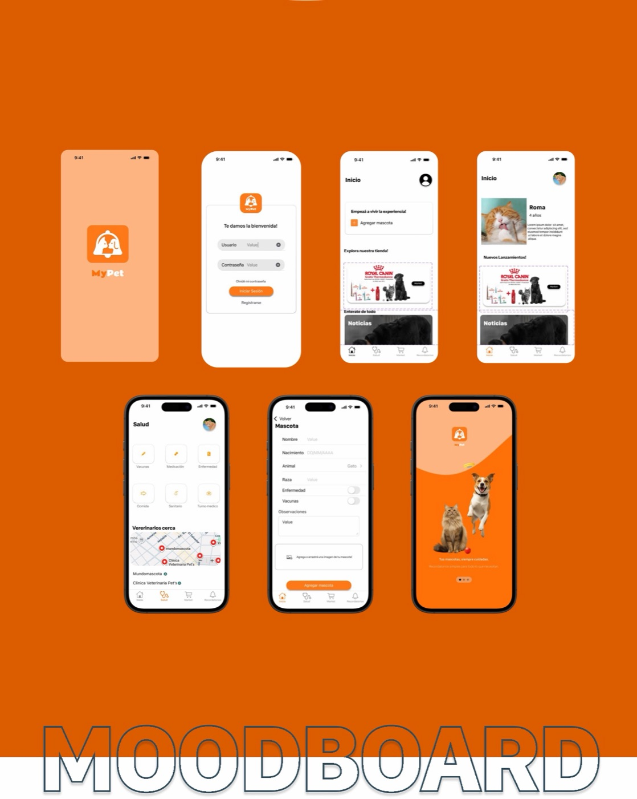
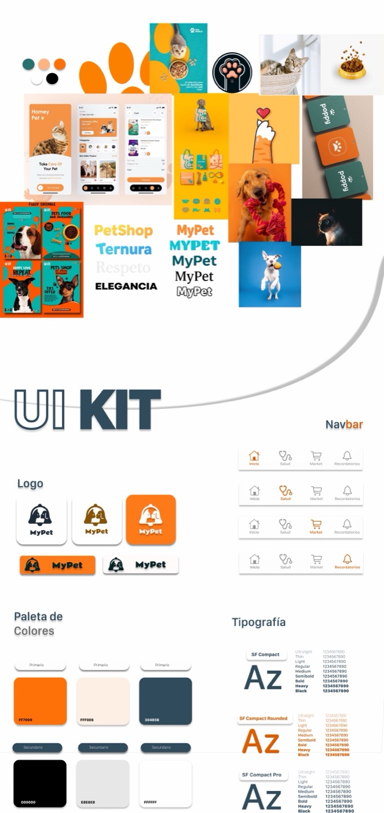
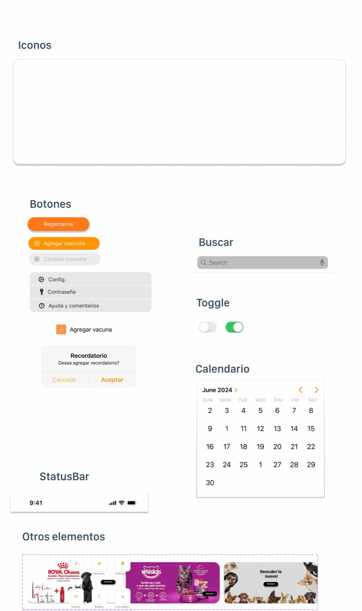

Caso de estudio · App mobile
MyPet: el cuidado de tu mascota,
en un solo lugar
Una app para organizar el cuidado diario: recordatorios de comida, paseos, vacunas y turnos veterinarios, avisos cuando el alimento está por terminarse y recomendaciones personalizadas.
Proceso
De la investigación al prototipo
Empatizar y definir
Análisis competitivo (11pets, DogLog), user persona y POV.
Idear
Card sorting y matriz de similitud para validar la arquitectura de información; task flows de registro, login y recordatorios.
Prototipar
Wireframes de baja a alta fidelidad, moodboard, UI kit y prototipo navegable.








